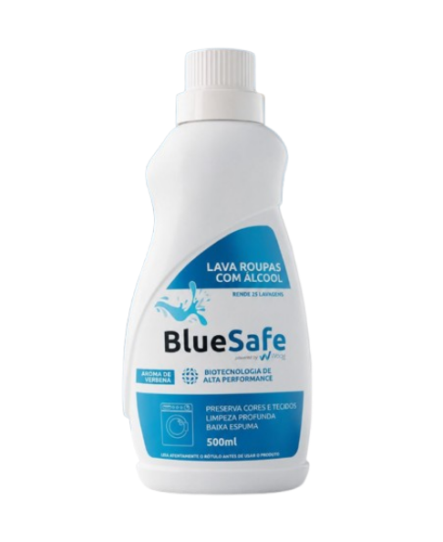

O BlueSafe Lava Roupas Enzimático é um detergente líquido desenvolvido com tecnologia enzimática de alta performance, proporcionando uma limpeza profunda e eficiente para diferentes tipos de tecidos. Sua fórmula avançada atua diretamente na remoção de sujeiras e manchas, preservando as cores e a qualidade das roupas mesmo após diversas lavagens.
A BlueSafe nasceu da expansão de mercado e da diversificação dos negócios da Wade, que ao longo dos anos estendeu sua atuação além da nutrição, passando a pesquisar soluções de limpeza. Em 2025, diante do crescimento da operação, a marca foi oficialmente criada com o objetivo de capitanear o segmento de soluções inteligentes de limpeza e cuidados com o ambiente. A partir de 2026, com a entrada do grupo no ecossistema do Biopark, a BlueSafe passou a contar com uma base sólida para a industrialização e a expansão sustentável de seus produtos.